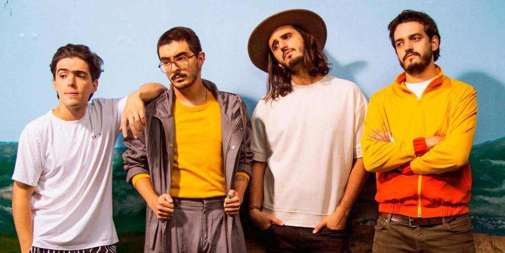

SU HISTORIA
En la historia de la música, desde la primera melodía hasta la última canción creada hasta el momento, hubieron muchas, muchas bandas, pero ninguna de esas bandas que actuaron en la historia se ganaron mi corazón entero. Morat es especial para mí. Por ahí no es la mejor banda, con las mejores letras ni las mejores melodías. Pero ésta, se destaca por la forma de actduar en los videos y en el escenario, por la forma en la que hablan en las entrevistas, por su historia. Morat tiene miles de fallos, pero la humildad y humanidad, sin ego ni vanidad, que los caracteriza, los hace perferfectos.
Morat se originó oficialmente en 2011, y saltó a la fama en 2015 con el éxito de su canción llamada "Mi Nuevo Vicio" en colaboración con Paulina Rubio. Esta banda, se copone por 4 integrantes: Juan Pablo Villamil, Juan Pablo Isaza, Simón Vargas y Alejandro Posadas. Aunque Alejandro Posadas fue reemplazado por Martín Vargas unos años después de su gran éxito.
Una de las bandas con mayor proyección de América Latina le habla a una generación con ansiedades y problemas que, a menudo, vive en un contexto de gran agitación social.
El momento decisivo para una de las bandas de más rápido crecimiento en América Latina llegó gracias a un instrumento poco probable: un banjo robado.
Musicalmente, la banda es un poco atípica en un ambiente donde el reguetón recibe la mayor atención. Las influencias de Morat incluyen Coldplay, Bacilos, Mac Miller, el poeta y cantante español Joaquín Sabina, Dave Matthews Band, la banda de rock colombiana Ekhymosis y, por supuesto, los Beatles. Villamil e Isaza también son fanáticos del country (escriben y graban a menudo en Nashville), y los hermanos Vargas eran metaleros antes de incursionar en el folk-rock.
MORAT COMENZÓ cuando tocaban en la escuela primaria; sus miembros se conocen desde los cinco años. A medida que se acercaban al final de la escuela secundaria, Isaza, Villamil, Simón Vargas y Alejandro Posada, el baterista original del grupo, formaron una banda. Después del lanzamiento de su primer álbum en 2016, Posada se salió para concentrarse en sus estudios y el hermano menor de Vargas se incorporó.